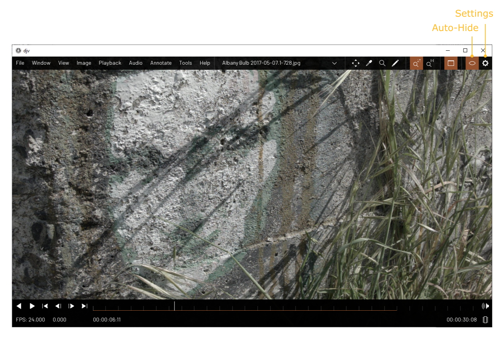

Home | Documentation | Annotations
Auto-Hide
By default the user interface will fade out and
hide itself if you don't move the mouse for awhile. This allows you to concentrate on your footage
without the visual distraction of the user interface elements. If you want to turn off this feature
you can use the button in the menu bar, or change it in the settings dialog.
